4.3 Participación
En el presente apartado se expondrá un analisis de la participación política juvenil, comparando las vivencias de los jóvenes suecos y chilenos. Esto respecto a tres tipos de participación política, la participación en las escuelas, la participación en la vida publica y la socialización política con sus cercanos.
4.3.1 Participación en la escuela
Respecto a la participación en la escuela existen diferencias en los tipos de participación, exceptuando la participación en consejos estudiantiles que es similar. En Chile, según lo declarado por los estudiantes, existe una muy mayor proporción de jóvenes que han votado en elecciones escolares sería interesante indagar en las distintas formas de organización estudiantil. Otra diferencia observable es que en Suecia existe una mayor proporción de jóvenes que han participado activamente en reuniones escolares, pero en Chile existe una mayor participación en protestas. En suma, existen diferentes tipos de organización escolar destacando en Chile las votaciones y las protestas, mientras que en Suecia la participación directa en consejos y reuniones estudiantiles.
Been a member of the student council
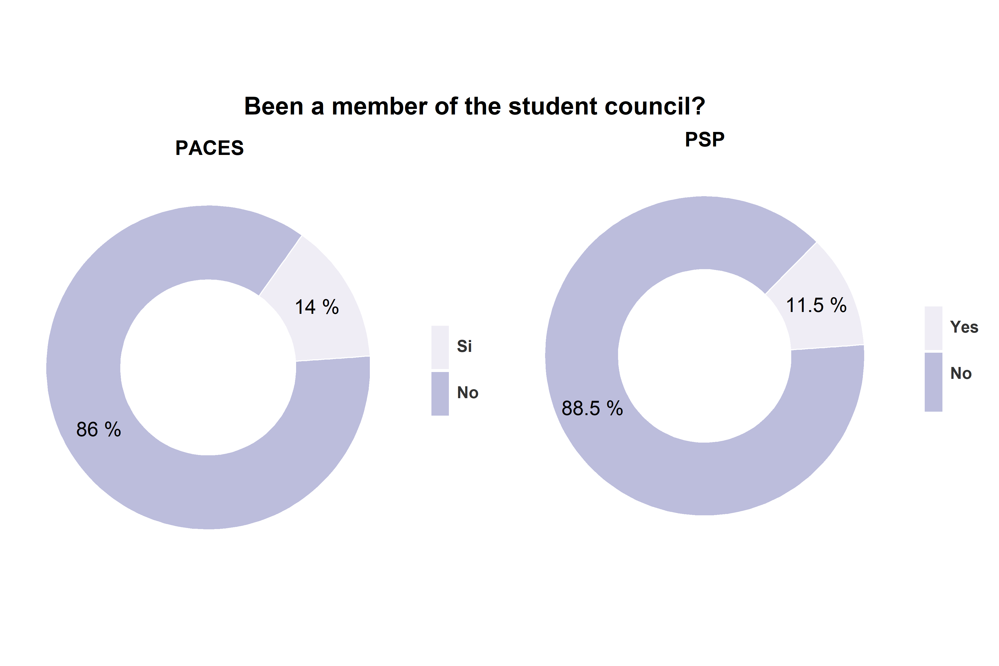
Taken an active role at a students’ meeting?
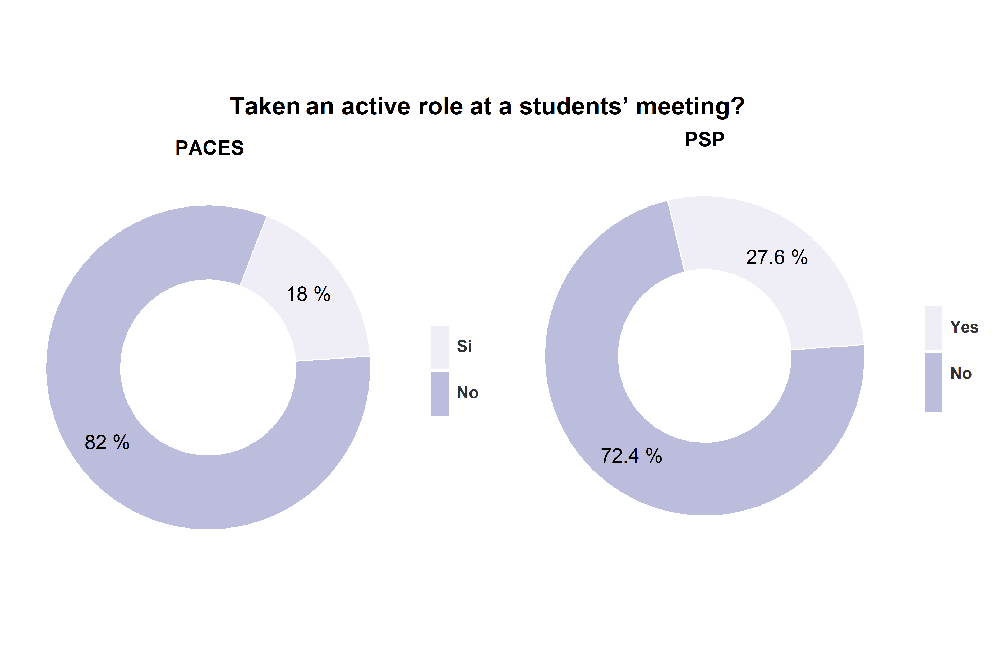
Voted in a school election?
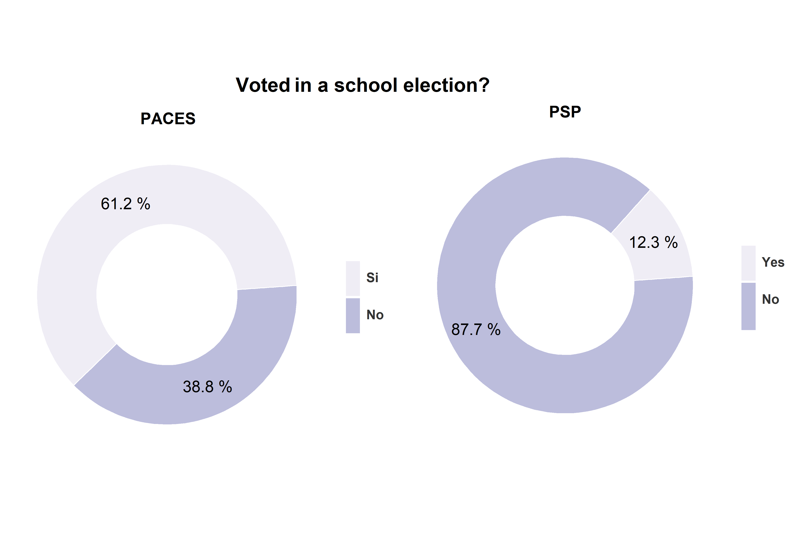
Participated in a protest at school?
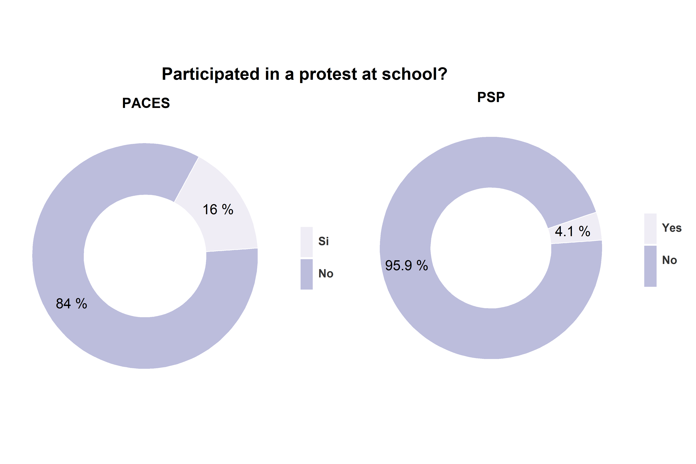
4.3.2 Participación publica
En la participación política juvenil en el espacio publico se observa nuevamente distintos tipos de participación y no una diferencia en grados de participación. La similitud es que en ambos países aproximadamente el 38% de los jóvenes ha firmado peticiones para dar su respaldo a una causa. Es notorio que los jóvenes chilenos poseen mayor participación en distintos tipos de protesta contenciosa que busca influir al sistema político desde fuera, ya sea con protestas legales, ilegales u ocupaciones. Por su parte los jóvenes suecos poseen una muy mayor participación en actividades de voluntariado.
Youth participation
Signed a petition?
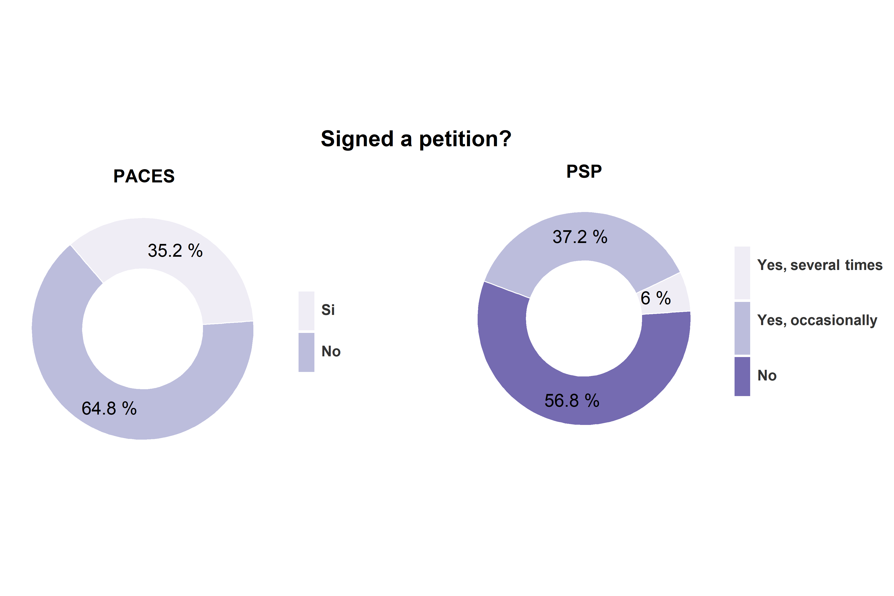
Worked voluntarily for a good cause?
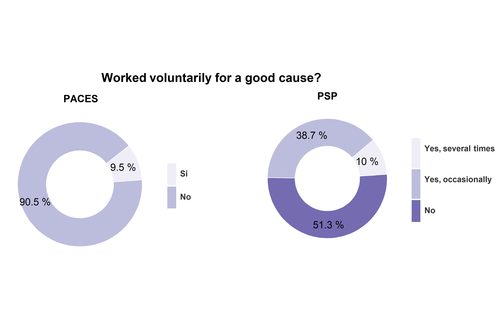
Taken part in a legal demonstration or strike?
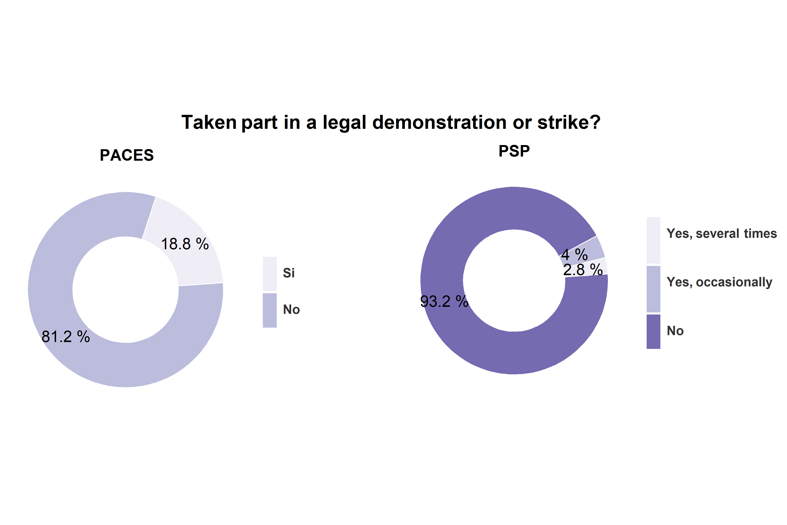
Occupation

Ilegal strike
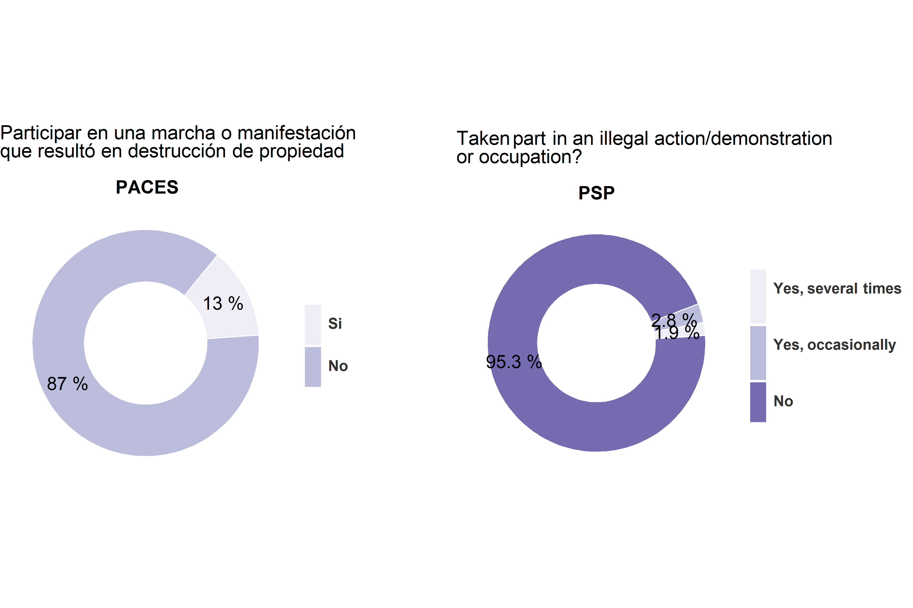
4.3.3 Socialización politica y discución ciudadana
A diferencia de los otros tipos de involucramiento y participación política, en la socialización política no se dan tipos de participación, sino que más bien, existe una diferencia general según la cual los jóvenes chilenos conversan más sobre política, temas sociales y medioambientales. Esta tendencia se da con mayor fuerza al contrastar las conversaciones con los padres. Estos niveles de socialización política familiar hacen sentido si se considera la consistencia entre la opinión publica adulta y juvenil, respecto a la satisfacción y confianza en la democracia.
Environmental issues
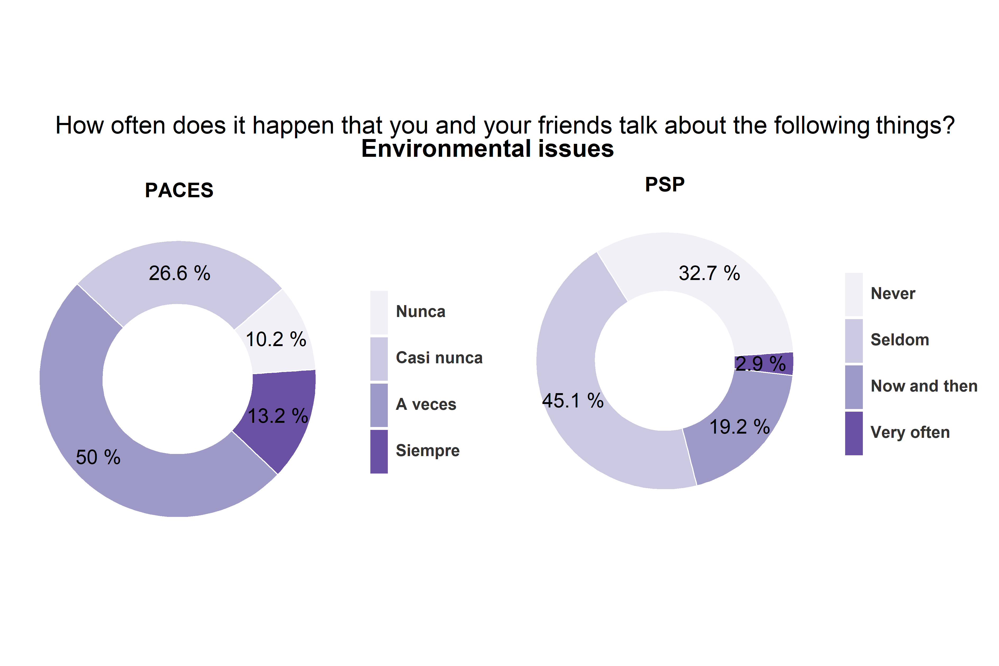
Facebook and contacts with others on the Internet
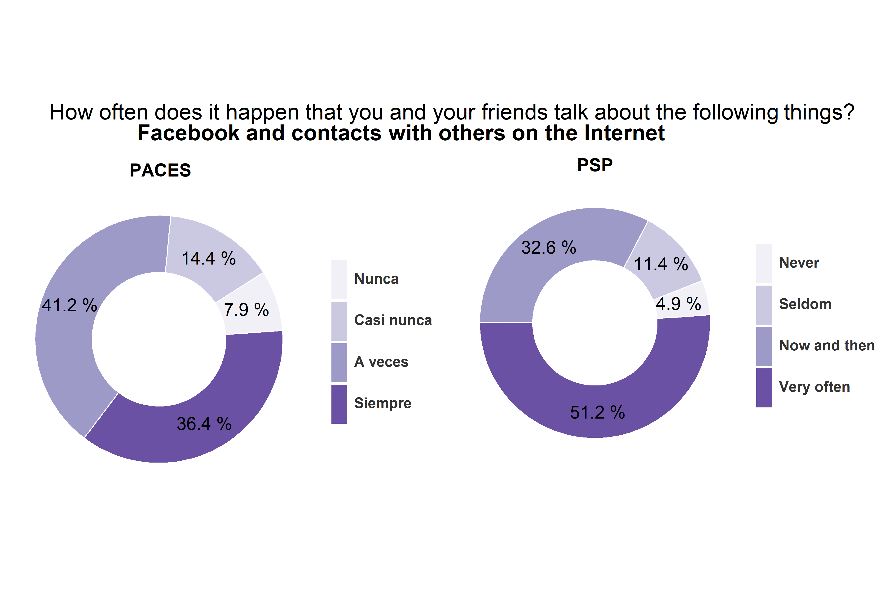
Politics or societal issues
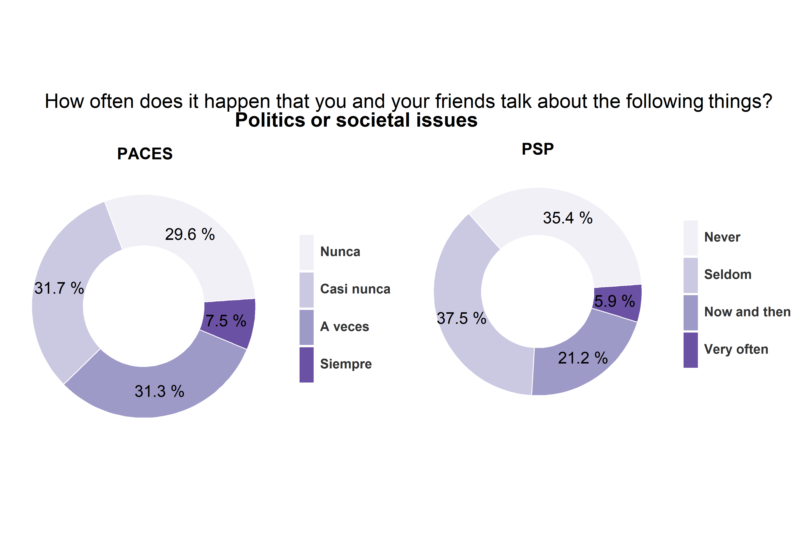
What you have heard on the news about what is going on in ´country´ and around the world
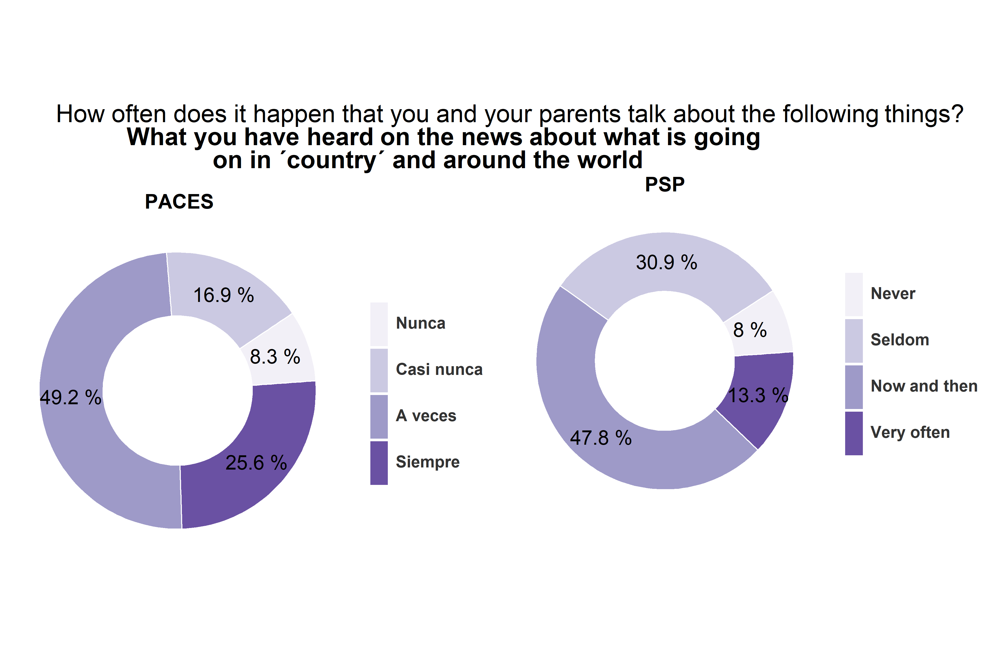
Environmental issues
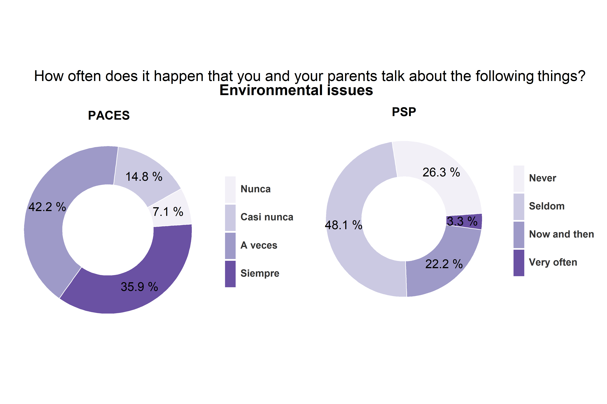
Politics or societal issues
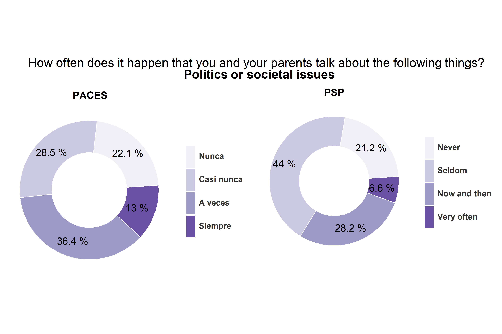